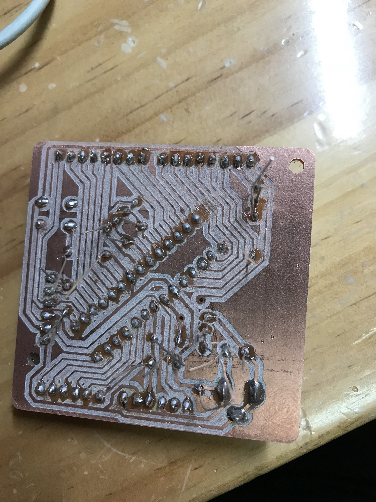

PCB and electric circuits

Use fabmodules.org to convert .png pictures to .rml /machine SRM-20/speed 2mm/s /set origin(0,0,0)/number of offset 3 /offset overlap 33%

Also convert them for the holes.png and cuts.png
1. Make the chemical wood horizontal use the 8mm mill.2. Stick the single-face tape on the chemical wood.3.Stick the double-face tape between PCB and the single-face tape
Use 4mm mill to make the trace and 6mm mill to make holes and cut
Clean it by alchol and sand paper
Then weld the circuits on the PCB board.
